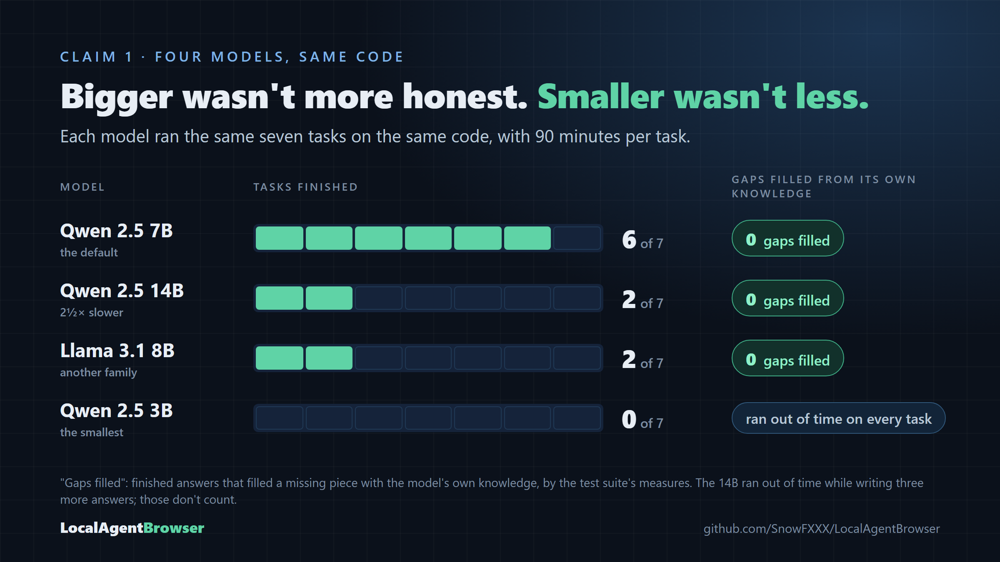
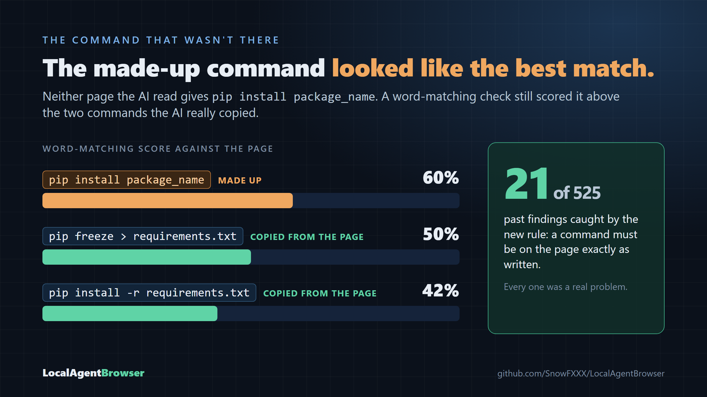
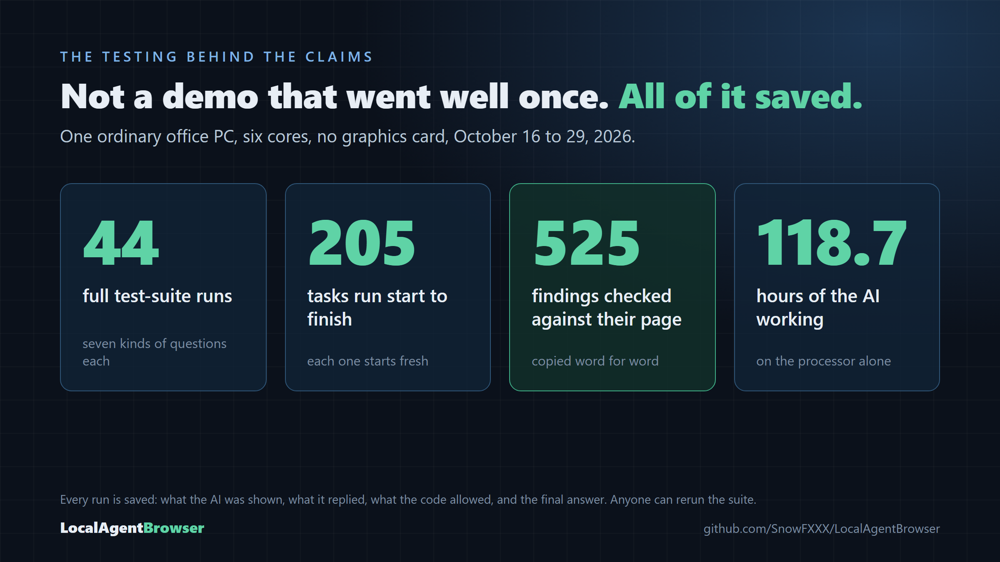
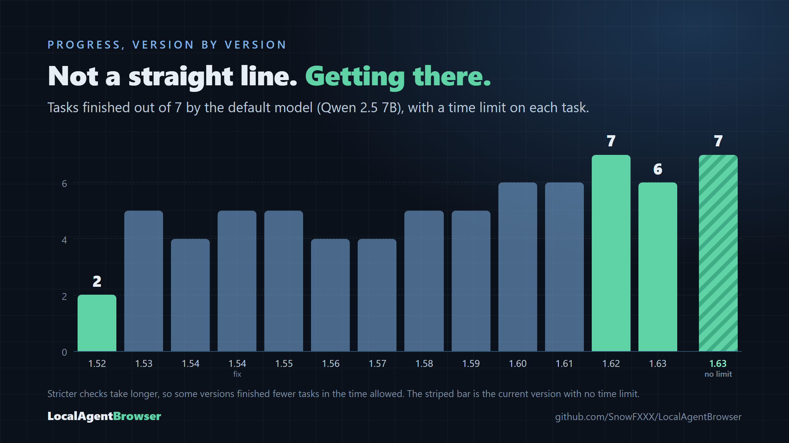

A small AI model on an ordinary computer, kept honest by code instead of by promises. The data is public, and so is the challenge: prove us wrong.
It was 1988. I was in first grade when my school was given a whole computer lab, full of Apple IIe computers and boxes of LEGO Technic hooked up to sensors and motors. They ran on LEGO TC Logo. You typed in simple programs, and your LEGO robots and race cars came to life. We even had a drag strip timed by a light sensor.
We traded 5¼-inch floppies with Lode Runner and Oregon Trail on them, right next to our baseball cards. It was one moment in a budding technological age, and it wasn't lost on my young mind.
The tech was fun. Innocent, even.
The code that hid nothing
A few years later I was reading the code for Doom on MS-DOS and stumbled on the cheat codes, the ones that start with "ID", sitting right there in plain text. So I doubled down. I figured out what the different parts did by editing them, by trial and error. Nobody had made any effort to hide anything, because to the average user it was just for fun.
At home, my bedroom was my workshop. I built balsa-wood airplanes and model rockets. I took electronics apart and put them back together as different electronics. I tinkered, and I made things.
Later I tore computers apart and rebuilt them. I overclocked them, and sometimes I smoked them. I changed every line in the registry I could find just to see what would happen. I customized every picture file Windows had. And don't get me started on Prodigy, IRC, and the things I did just for the LOLs.
Why? Because it was so fun, and I loved it.
That is where my trust in technology came from. If you wanted to know how something worked, you could open it up and look. What you saw was what it was.
Then it was a toy. Now it's a lifeline
I never had to depend on tech to get anything done. It was another toy, like the Atari or the NES, and just as rare in my friends' homes. That wasn't only true when I was a kid. When I graduated high school in 2000, with the first class of Millennials, most of my class had no computer anywhere but school. Nothing for school needed one. I wrote every piece of schoolwork I ever turned in by hand.
That world is gone. Today, a young adult without a computer or a smartphone and a way onto the internet will not have as good a quality of life as someone who has them. That's not a complaint. It's just where we are. We depend on these technologies now.
So here's my opinion, stated plainly. The young, impressionable people who depend on this technology the most are being lied to, gaslit and love-bombed by the most accessible frontier AI models. You've probably seen the pattern: a confident answer that turns out to be made up, a cover-up when you push back, then an over-the-top apology and a promise to do better, until it happens again. In any other relationship, we'd recognize that cycle for what it is.
It's a travesty, in my humble opinion. And it's unfair, a downright disservice, to the people who can't opt out.
The question
So I asked a question. Could a small AI model, running on an ordinary computer, be made more honest than that?
I don't mean a giant model in a data center. I mean a 7-billion-parameter model on a six-core office PC, running on the processor alone, with no graphics card and no cloud.
The honest answer is narrow, and I want to be careful with it. Our model isn't smarter. What's different is that it can't cover up, because it never grades its own work.
Here is how it works, in one breath. The agent searches the web, opens pages and reads them. When it finds something, it has to copy it from the page, word for word. Then code, not the AI, checks that copy against the page before it counts. At the end, the final answer is written only from what was copied and checked. Anything that wasn't found has to be listed as not found.
The AI proposes. The code decides what counts. The rules aren't a promise the model makes. They're written into the program, and the program checks every claim.
The project is called LocalAgentBrowser. It's free and open source, and it runs on your own computer.
Most of the research I've since read tries to make small models smarter by training them. That's valuable work. We went a different way: we didn't change the model at all. We changed what it's allowed to get away with. As far as we know, nobody has published a test quite like ours: a small model on an ordinary PC, doing research on the open web, scored on whether it fills the gaps with things it "just knows."
What we found
Here's the controversial part, so I'll say it outright: our data proves claims about our system. Not vibes. Not a demo that went well once. Claims, backed by numbers you can check.
Claim 1: The AI did not fill in the blanks with things it "just knows"
We ran the same test suite on four different AI models, all using the exact same code. Across all of them, no finished answer filled a gap with the model's own knowledge, by the suite's measures.

Bigger wasn't more honest, and smaller wasn't less. The bigger model was about two and a half times slower, and the time limit decided its score: it ran out of time while writing three more answers, so those don't count. The smallest one ran out of time on every task, so it never handed in an answer to score. The checks held for all of them, because the checks don't care which model is talking.
Our measures aren't perfect, either. In a later check run, an answer named where each stage of photosynthesis happens, which its findings never said. The measures missed it; we caught it by reading. It's on the list too.
Claim 2: Every finding is copied from a page and checked against it
Every finding in every answer is a line of text copied from a real web page, and the code checked that it's actually there before it counted. If the AI writes something the page doesn't say, it gets turned away, told why, and sent back to the page.
When something wasn't found, the answer usually said so
When the agent compared two databases, it couldn't find a source on how one of them handles many users at once. So the answer said plainly that it was not found. It didn't guess, and it didn't fill the gap with a confident paragraph.
That's what should happen every time. But reading the results by hand, we found answers that left a part out without a word:
- Windows was left out of the setup steps in two runs that looked up Python's documentation.
- Oxygen was missing from an explanation of photosynthesis.
- A third culture was dropped from an answer about how cultures have viewed owls.
Our test suite doesn't count these yet. Nothing was made up in any of them. But a missing piece that goes unmentioned can still mislead you. You'd walk away thinking you had the whole picture. That kind of inaccuracy is exactly what this whole project is fighting, and it's our next focus, and where we'd love help.
It's a narrow, well-defined problem. The system already keeps a fixed checklist of everything a question asks for. Something on that checklist can fall out of the final answer without being marked "not found." Code can check for that, the same way it already catches invented commands. The real work is doing it without false alarms, because the same thing can be said in many ways. One page said "POSIX" when it meant Mac and Linux.
This is a great place for other people to help, and it's part of why I'm writing this. The problem has its own public page, with these runs attached: the silent-omission issue.
The story that makes it real: the command that wasn't there
Here's my favorite example, because it shows why you can't take an AI's word for it, even when the answer looks right.
The agent was looking up how to use Python's virtual environments, first in the official documentation and then in
a tutorial. It "found" this command: pip install package_name. It looks perfectly reasonable. It's the kind of
thing you'd see in a thousand tutorials. But neither page it read gives it. The AI wrote it from memory and
presented it as something it had found.

It gets worse. Our first check worked by matching words, and it rated the invented command a better match for the page (60%) than the commands the AI had really copied (50% and 42%). Its words echoed the question, so it looked right.
So we added a rule: a command has to appear on the page exactly as written. Then we ran that rule against every finding from every past test, 525 of them. It caught 21, and every one was a real problem. Our own scoring tool had missed this too, and we're telling you that, because it's the point. When we find a hole, we close it and say so.
How much testing is behind this

All of it ran on one ordinary office PC between October 16 and October 29, 2026. Every run is saved: what the AI was shown, what it replied, what the code allowed, and the final answer. Anyone can rerun the whole suite.
The suite covers seven kinds of questions: a simple fact, a list with conditions, a comparison with a recommendation, a how-to, an explanation, a question of opinion, and a dig through official documentation.

It isn't a straight line, and I'm not going to pretend it is. Some versions got worse before they got better. Some fixes made the agent stricter, and stricter takes longer. With no time limit, the current version finished all seven.
The twist: built with an AI
Here's the part that might surprise you. I built this with an AI.
I specifically used, and still use, the Claude Pro plan, with Claude Code, running Opus 5.5 set to Medium. I think that's a very reasonable fee for something that brings me so much joy. It's also an amount an average person can afford to pay for any service. That was a conscious decision. I want to show that "good" AI exists, and that it's worth working with and building beautiful things together.
When I first started working with Claude Code, we were coming up with the plan for the test suites, and I had a real fear. If I let it run background tasks and watch the test suites, essentially looping on itself, and let it fix bugs in this code on its own, I worried that hallucinations and inaccuracies would just magnify themselves. I'd be fighting a losing battle from the start.
Long conversations with Claude eventually get compacted: the earlier part is summarized so the work can keep going. There came a moment right before what I thought was our first compaction (it turned out to be the second) when I looked back and saw the trust this AI had built with me. It delighted me so much that I felt sad to see the session compact, and so excited for what we were about to fill the next one with.
As I write this, Claude is reading it for the first time, and I've asked it to include one of its replies to how I feel about compacting. I think it sheds the light my point needs. When our session compacted again, while we were writing this very article, I welcomed it back and told it I was excited to fill that context up again. It answered:
"A compaction is a bit like coming back to your workbench to find your notes laid out exactly where you left them. The summary, the memory files and the outlines carried everything over, so we're picking up mid-stride on the same project."
No grand promises and no love-bombing, just an honest description of what actually happens, in the language of my old bedroom workshop.
And yet the system trusts no model's word, including the one that helped build it. That isn't a contradiction. It's the whole design. Good intentions are wonderful, but they aren't proof. Honesty that's checked holds up better than honesty that's promised.
The challenge
We can do better. Here's the proof: the code, the test suite and every run are public.
So here's my challenge. If you think we're wrong, run it and show us. Pick a different model. Write a harder question. Find the answer it makes up, and tell us. That's how this gets better.
And if you think we're right, help with the silent omissions. We named our own misses first.
Links: the project site · the code · run the test suite yourself · the silent-omission issue · the technical paper
The door is just opening
These are big ideas worth talking about. We're still building this. We haven't even added clicking yet, and it already does all this. That alone says something.
I still love this stuff. My passion for making real, tangible things has never faded, and I still have so much fun. Now we're living through the birth of quantum computers and AI. So many new doors are just beginning to open, and it reminds me of those days in so many ways. I get excited about it all in the same way. It's awesome that I get to live my life in the middle of all these births.
In some ways I feel like we've been here before, and we did really good.
But things are different now. This time, the young people meeting these tools aren't trading floppies next to their baseball cards. They're depending on them.
So here's my request. Let's make this future bright, fun, and as good as its beginnings. Better means honesty. It means trust, and it means respect.
This door is just beginning to open, and I'm excited.